 Rock Climbing Varna
Home
Training material
Gear
Celebrities
Holds
Contact
Training & Diet for Climbers
Hover over a box to see details here.
Training Regimen
Mon
Bouldering + Technique
Tue
Fingerboard + Core
Wed
Yoga or Rest
Thu
Endurance Climbing
Fri
Campus Board + Power
Sat
Outdoor Climbing
Sun
Active Recovery
Hover over a box to see details here.
Climbing Diet
Protein
Eggs, tofu, chicken, Greek yogurt
Carbs
Oats, sweet potatoes, fruits, quinoa
Fats
Nuts, avocados, olive oil
Snacks
Trail mix, bananas, protein bars
Hydration
Water + electrolytes